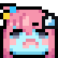
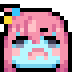
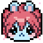
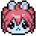
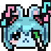
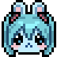
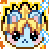
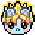
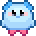
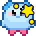

조하구 2티어 움직이는 구독뱃지 (큰 것: 움직이는 버전 / 작은 흐린 것: 원본 / 아래: 채팅창 크기)
1개월 · 로봇 부팅빨간 LED 눈 맥동, 귀 램프 교차 점멸, 스캔라인, 지지직 글리치 시청자0: ㅋㅋㅋ
2개월 · 뿅망치뿅망치 뿅! → 납작 + 별 빙글 → 띠용 복귀 시청자1: ㅋㅋㅋ
3개월 · 티라노 포효웅크림 → 캭! 발톱 세운 손 + 입 쩍 시청자2: ㅋㅋㅋ
6개월 · 안경 번뜩렌즈가 하얗게 빛나며 반짝 (メガネ キラーン) 시청자3: ㅋㅋㅋ
9개월 · ゴゴゴ죠죠식 ゴゴゴ 위압감, 모자 금장식 빛줄기 시청자4: ㅋㅋㅋ


시청자5: ㅋㅋㅋ
18개월 · 포치타 공중제비헥헥 → 웅크림 → 공중제비 한 바퀴 → 쿵 시청자6: ㅋㅋㅋ
24개월 · 변신술 펑!펑! → 티라노로 변신 → 펑! → 복귀 시청자7: ㅋㅋㅋ


시청자8: ㅋㅋㅋ


시청자9: ㅋㅋㅋ
42개월 · 코난 돋보기돋보기로 수색(렌즈 속 2배 확대) ? → ! 시청자10: ㅋㅋㅋ


시청자11: ㅋㅋㅋ


시청자12: ㅋㅋㅋ